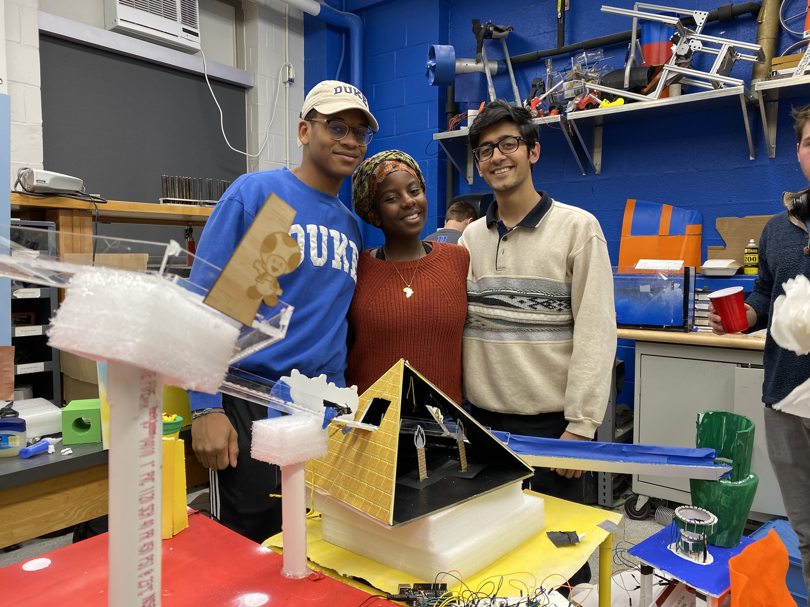

EGR121 - Engineering Innovation
August 2019 - December 2019
This is a collection of my work from my introductory mechanical engineering design class. The class consisted of design challenges and competitions that helped us work collaboratively and develop our techinical skills.
Alarm Clock Disassembly
We were assigned to take apart alarm clocks in groups and document the disassembly process, develop a bill of materials (BOM), draw exploded views, and suggest design improvements for cost reduction and increased functionality.
Mech Machines
Our challenge was to transport a balloon (imagined to be a "warhead") 60 feet into an acrylic box (the "disarmment chamber"). We had to stay outside of a boundary and could not come within 10 feet of the balloon. If the balloon hit any part of our solution device or the ground, or the outside of the disarmament chamber, the attempt was considered a failure. We had four attempts and the highest three attempts were scored based on how fast we completed the disarmament. We were also scored on theming and decorations.
Our group decided on a Men in Black theme. We dragged the balloon to the disarmament box using a set of three strings, and used these strings to carefully lower the balloon into the box. Then one of our group members used a spike on a long pole to pop the balloon. Our solution produced some of the fastest times among groups in our class.
Happy Meal Toy
In teams of 3 or 4, we designed, created, and analyzed a Happy Meal toy. We learned how to use SolidWorks, tolerance parts for different types of fits, 3D print prototypes, create dimensioned drawings, design for manufacturing, account for manufacturing costs and perform market analysis.
My group decided to create a Pokemon-themed ball launcher. The launcher would launch little balls that are painted to look like popular Pokemon, and kids could launch the Pokemon towards each other to have them "battle".
Rube Goldberg
As our final project, the class was split into two groups of 12 and each group made a themed Rube Golberg machine. Each team consisted of 4 subgroups, and each subgroup's components had include two electronic circuits, one Arduino circuit, a variety of sensors, and a machined component. The Rube Goldberg was initiated by inserting a golf ball into the beginning of the track.
My subgroup members and I after our final project run
Our overall group theme was Super Mario Bros, and my subgroup focused on the sand stages of the game. We built three main components: a pyramid with Arduino-controlled RGB LEDs, a launcher using a retracting solenoid that shoots "sand" up into the air, and a electromagnet-triggered cannon that propels the ball into a sinkhole.